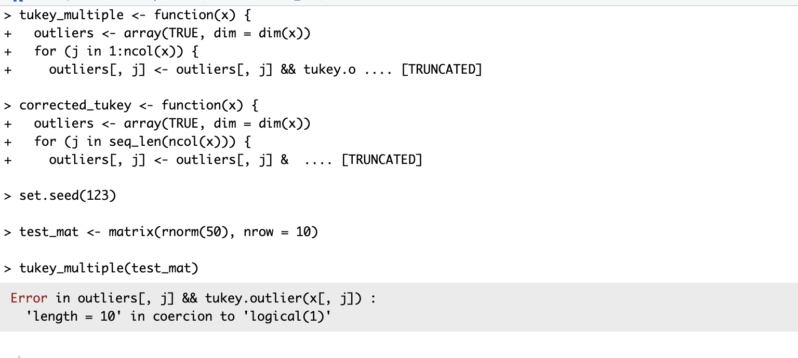
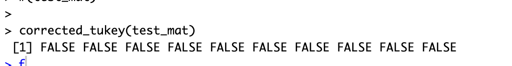
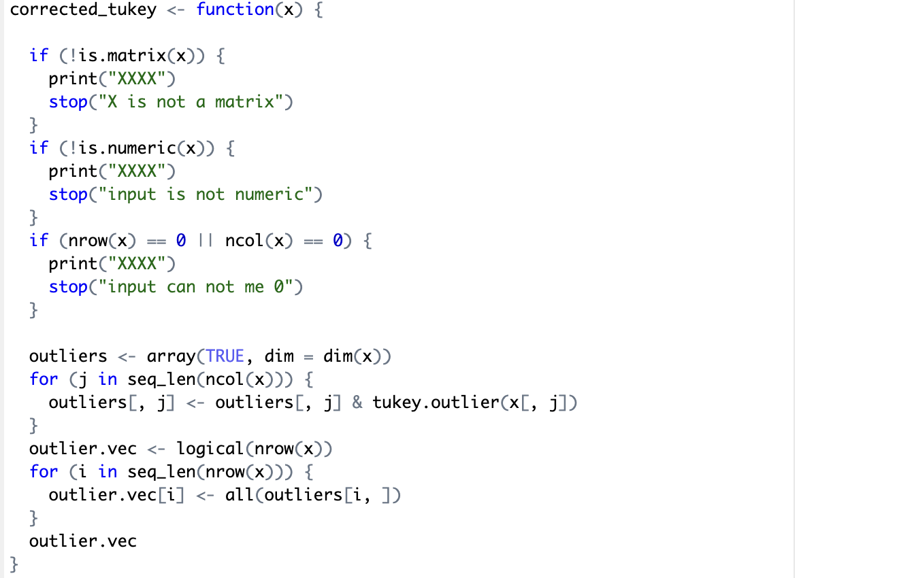

Error in function: tukey_multiple
The error when running this function was caused by the && evaluation. This error message as shown above was fixed by replacing the && evaluation with &. The && operation cannot be run on a vector with a length greater than 1.
Output after function correction

Corrected Code

I added defensive checks at the entry point of the function to check and print if the incoming parameter x is a matrix, it is numeric and it is not empty